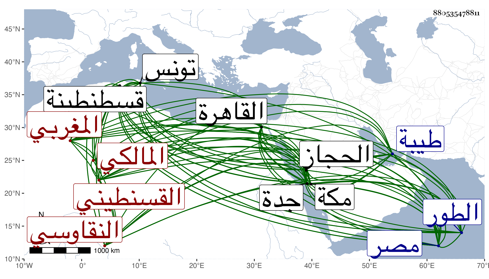

0902Sakhawi.DawLamic.ITO20230111-ara1.EIS1600.880535478811
Biography ID: 880535478811
11
محمد بن محمد بن محمد بن يحيى بن أبي علي أبو الطيب بن أبي عبد الله المغربي النقاوسي القسنطيني المالكي . ولد في يوم الأربعاء ثامن عشر جمادى الثانية سنة ثمان وأربعين بنقاوس من غربي قسنطينة ، وكان والده قاضيها ثم تحول في حياته بعد قراءته القرآن واشتغاله قليلا إلى قسنطينة لطلب ثم إلى تونس وأخذ الفقه عن إبراهيم الأخدري وأصوله مع المنطق والعربية والمعاني عن أحمد النخلي ومحمد الواصلي ، وتوفي والده فارتحل إلى الديار المصرية في سنة تسع وستين فجد في الاشتغال واختص بخطيب مكة أبي الفضل رفيقا للخطيب الوزيري وأخذ عن الشمني في حاشيته وغيرها كشرح نظم أبيه للنخبة وتكرر له عنه والتقى الحصني في المنطق وغيره والشرواني في شرح الطوالع وغيره من طبيعي وإلهي ورياضي والكافياجي ولازم الأمين الأقصرائي في التفسير وغيره والفقه عن يحيى العلمي وآخرين ، وطلب الحديث وقتا وأخذ عن بقايا الشيوخ وكتب بعض الطباق وسمع مني رفيقا للقمصي مشيخة الرازي والبردة وحضر عندي بعض مجالس الإملاء وكان يكثر مراجعتي مع عقل وسكون وفضيلة وفي غضون إقامته بالقاهرة حج ثم رجع إلى بلاده واستقر قاضي العسكر لحفيد مولاي مسعود ثم أرض عنه لاختياره سكني تونس وصار أحد عدولها ودام سنين وامتدح صاحبها بعد إخراج عبد المؤمن بن إبرهيم ابن عثمان عنها زكريا بن يحيى بن مسعود بقصيدة أولها :
| ضحك الربيع وجاء سعد مقبل | ولك الهنا ذهب الزمان الممحل |
| فارفل فديتك في ميادين المنى | هذا لواء النصر وافى يرفل |
| وأرح جواد الجدفي أثر العدى | فسهام سعدك في الأعادي أنبل |
وسمعها منه بعض فضلاء المغاربة ولم يسمح بعود نسخته بها إليه وقال له أن زكريا امتدح بكثير ولم يطابق الواقع في مدحه غيرك . ثم تحول بعياله وجماعته قاصدا استيطان الحجاز فدخل الديار المصرية فكانت إقامته بها نحو ثلاثة أشهر وركب البحر من الطور صحبة نائب جدة فدخل مكة في أثناء رجب ولقيته هناك فدام بها على طريقة حسنة في الانجماع والعبادة إلى أن سافر مع المدنيين إلى طيبة فقدمها في أواخر سنة سبع وتسعين وثمانمائة فدام بها ولقيته حينئذ بها وكتب لي بخطه ما عمله أجابه لصاحبه الخطيب الوزيري وأقرأ هناك بعض الطلبة وذكر لي أن عزمه استيطانها .
